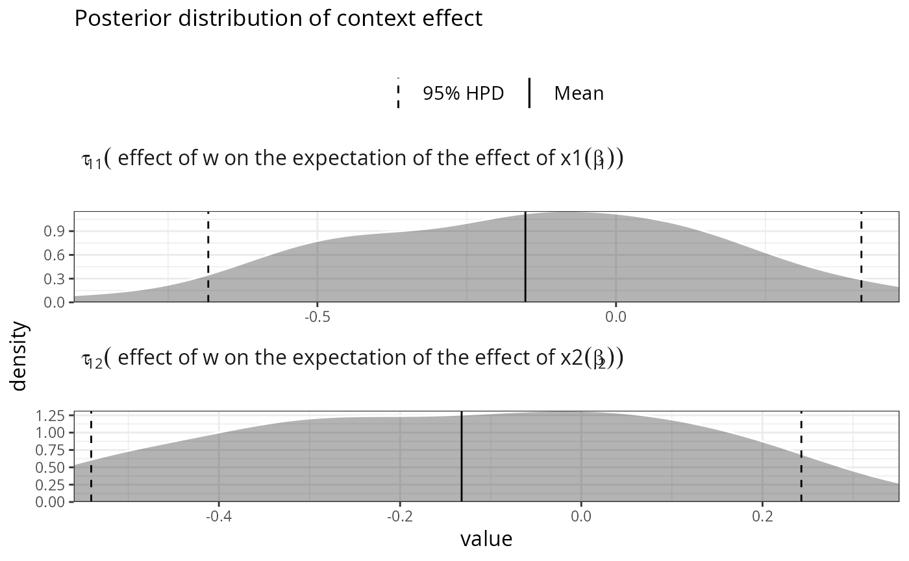
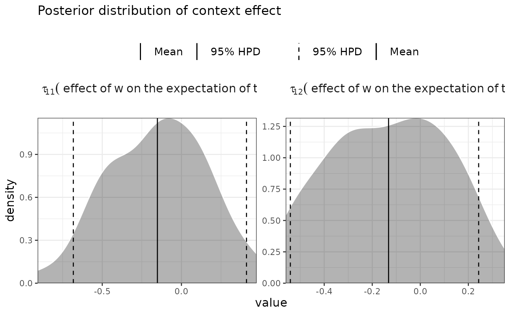
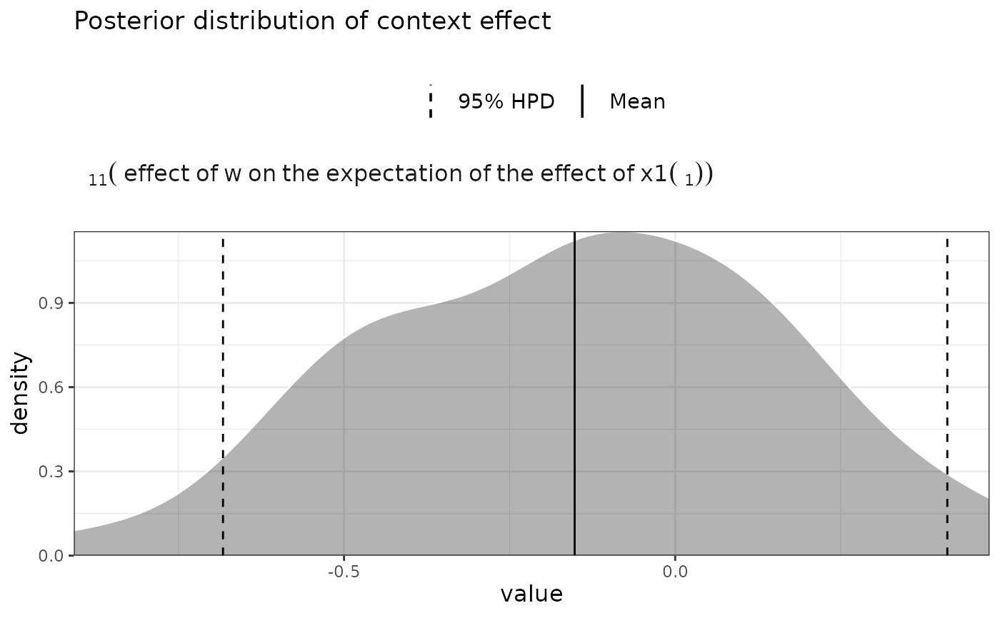

Function to plot posterior distribution of tau
plot_tau(samples, X = NULL, W = NULL, title = NULL, true.tau = NULL, show.all.taus = FALSE, show.all.betas = FALSE, ncol = NULL, legend.position = "top", x.axis.size = 1.1, y.axis.size = 1.1, title.size = 1.2, panel.title.size = 1.4, legend.size = 1, xlab = NULL)
Arguments
| samples | an output of the function |
|---|---|
| X | a string vector with the name of the first-level covariates whose associated tau should be displayed |
| W | a string vector with the name of the context-level covariate(s) whose linear effect will be displayed. If |
| title | string, title of the plot |
| true.tau | a |
| show.all.taus | boolean, if |
| show.all.betas | boolean, if |
| ncol | number of columns of the grid. If |
| legend.position | one of four options: "bottom" (default), "top", "left", or "right". It indicates the position of the legend |
| x.axis.size | numeric, the relative size of the label in the x-axis |
| y.axis.size | numeric, the relative size of the label in the y-axis |
| title.size | numeric, the relative size of the title of the plot |
| panel.title.size | numeric, the relative size of the titles in the panel of the plot |
| legend.size | numeric, the relative size of the legend |
| xlab | string, the label of the x-axis |
Examples
library(magrittr) set.seed(66) # Note: this example is just for illustration. MCMC iterations are very reduced set.seed(10) n = 20 data.context1 = tibble::data_frame(x1 = rnorm(n, -3), x2 = rnorm(n, 3), z = sample(1:3, n, replace=TRUE), y =I(z==1) * (3 + 4*x1 - x2 + rnorm(n)) + I(z==2) * (3 + 2*x1 + x2 + rnorm(n)) + I(z==3) * (3 - 4*x1 - x2 + rnorm(n)) , w = 20 ) data.context2 = tibble::data_frame(x1 = rnorm(n, -3), x2 = rnorm(n, 3), z = sample(1:2, n, replace=TRUE), y =I(z==1) * (1 + 3*x1 - 2*x2 + rnorm(n)) + I(z==2) * (1 - 2*x1 + x2 + rnorm(n)), w = 10 ) data = data.context1 %>% dplyr::bind_rows(data.context2) ## estimation mcmc = list(burn.in=1, n.iter=50) samples = hdpGLM(y ~ x1 + x2, y ~ w, data=data, mcmc=mcmc, n.display=1)#> #> #> Preparing for estimation ... #> #> #> #> Estimation in progress ... #> #> #> #> ----------------------------------------------------- #> MCMC in progress .... #> #> Family of the distribution of the outcome variable of the mixture components: gaussian #> #> Burn-in: 1 #> Number of MCMC iterations : 50 #> #> Iteration: 1 #> #> Acceptance rate for beta : 1 #> Average acceptance rate for beta : 1 #> #> Maximum Number of cluster allowed (K) : 100 #> Maximum Number of cluster activated among all contexts : 1 #> Maximum Number of clusters active in the current iteration : 1 #> #> (displaying only clusters with more than 5% of the data) #> Clusters in context 1 #> 1.0000e+00 #> 1.0000e+02 #> #> Clusters in context 2 #> 1.0000 #> 95.0000 #> #> [=== ] 3 % #> #> ----------------------------------------------------- #> MCMC in progress .... #> #> Family of the distribution of the outcome variable of the mixture components: gaussian #> #> Burn-in: 1 #> Number of MCMC iterations : 50 #> #> Iteration: 2 #> #> Acceptance rate for beta : 1 #> Average acceptance rate for beta : 1 #> #> Maximum Number of cluster allowed (K) : 100 #> Maximum Number of cluster activated among all contexts : 2 #> Maximum Number of clusters active in the current iteration : 2 #> #> (displaying only clusters with more than 5% of the data) #> Clusters in context 1 #> 1.0000 2.0000 #> 25.0000 75.0000 #> #> Clusters in context 2 #> 1.0000 3.0000 4.0000 #> 10.0000 55.0000 35.0000 #> #> [===== ] 5 % #> #> ----------------------------------------------------- #> MCMC in progress .... #> #> Family of the distribution of the outcome variable of the mixture components: gaussian #> #> Burn-in: 1 #> Number of MCMC iterations : 50 #> #> Iteration: 3 #> #> Acceptance rate for beta : 1 #> Average acceptance rate for beta : 1 #> #> Maximum Number of cluster allowed (K) : 100 #> Maximum Number of cluster activated among all contexts : 4 #> Maximum Number of clusters active in the current iteration : 4 #> #> (displaying only clusters with more than 5% of the data) #> Clusters in context 1 #> 1.0000 2.0000 3.0000 5.0000 #> 15.0000 10.0000 40.0000 35.0000 #> #> Clusters in context 2 #> 1.0000 2.0000 3.0000 4.0000 7.0000 #> 10.0000 30.0000 30.0000 10.0000 15.0000 #> #> [====== ] 7 % #> #> ----------------------------------------------------- #> MCMC in progress .... #> #> Family of the distribution of the outcome variable of the mixture components: gaussian #> #> Burn-in: 1 #> Number of MCMC iterations : 50 #> #> Iteration: 4 #> #> Acceptance rate for beta : 1 #> Average acceptance rate for beta : 1 #> #> Maximum Number of cluster allowed (K) : 100 #> Maximum Number of cluster activated among all contexts : 6 #> Maximum Number of clusters active in the current iteration : 6 #> #> (displaying only clusters with more than 5% of the data) #> Clusters in context 1 #> 2.0000 4.0000 5.0000 7.0000 #> 10.0000 35.0000 10.0000 35.0000 #> #> Clusters in context 2 #> 3.0000 4.0000 5.0000 7.0000 #> 35.0000 15.0000 20.0000 15.0000 #> #> [======= ] 9 % #> #> ----------------------------------------------------- #> MCMC in progress .... #> #> Family of the distribution of the outcome variable of the mixture components: gaussian #> #> Burn-in: 1 #> Number of MCMC iterations : 50 #> #> Iteration: 5 #> #> Acceptance rate for beta : 1 #> Average acceptance rate for beta : 1 #> #> Maximum Number of cluster allowed (K) : 100 #> Maximum Number of cluster activated among all contexts : 8 #> Maximum Number of clusters active in the current iteration : 8 #> #> (displaying only clusters with more than 5% of the data) #> Clusters in context 1 #> 1.0000 3.0000 4.0000 5.0000 6.0000 #> 10.0000 35.0000 10.0000 10.0000 20.0000 #> #> Clusters in context 2 #> 3.0000 7.0000 #> 50.0000 40.0000 #> #> [========= ] 11 % #> #> ----------------------------------------------------- #> MCMC in progress .... #> #> Family of the distribution of the outcome variable of the mixture components: gaussian #> #> Burn-in: 1 #> Number of MCMC iterations : 50 #> #> Iteration: 6 #> #> Acceptance rate for beta : 1 #> Average acceptance rate for beta : 1 #> #> Maximum Number of cluster allowed (K) : 100 #> Maximum Number of cluster activated among all contexts : 9 #> Maximum Number of clusters active in the current iteration : 9 #> #> (displaying only clusters with more than 5% of the data) #> Clusters in context 1 #> 2.0000 3.0000 5.0000 6.0000 7.0000 8.0000 #> 15.0000 10.0000 10.0000 15.0000 10.0000 25.0000 #> #> Clusters in context 2 #> 3.0000 7.0000 #> 50.0000 40.0000 #> #> [========== ] 13 % #> #> ----------------------------------------------------- #> MCMC in progress .... #> #> Family of the distribution of the outcome variable of the mixture components: gaussian #> #> Burn-in: 1 #> Number of MCMC iterations : 50 #> #> Iteration: 7 #> #> Acceptance rate for beta : 1 #> Average acceptance rate for beta : 1 #> #> Maximum Number of cluster allowed (K) : 100 #> Maximum Number of cluster activated among all contexts : 9 #> Maximum Number of clusters active in the current iteration : 8 #> #> (displaying only clusters with more than 5% of the data) #> Clusters in context 1 #> 2.0000 3.0000 4.0000 5.0000 6.0000 11.0000 #> 20.0000 10.0000 15.0000 15.0000 20.0000 10.0000 #> #> Clusters in context 2 #> 3.0000 7.0000 #> 50.0000 40.0000 #> #> [=========== ] 15 % #> #> ----------------------------------------------------- #> MCMC in progress .... #> #> Family of the distribution of the outcome variable of the mixture components: gaussian #> #> Burn-in: 1 #> Number of MCMC iterations : 50 #> #> Iteration: 8 #> #> Acceptance rate for beta : 1 #> Average acceptance rate for beta : 1 #> #> Maximum Number of cluster allowed (K) : 100 #> Maximum Number of cluster activated among all contexts : 9 #> Maximum Number of clusters active in the current iteration : 7 #> #> (displaying only clusters with more than 5% of the data) #> Clusters in context 1 #> 1.0000 2.0000 4.0000 5.0000 6.0000 #> 15.0000 10.0000 15.0000 25.0000 25.0000 #> #> Clusters in context 2 #> 3.0000 7.0000 #> 50.0000 45.0000 #> #> [============= ] 17 % #> #> ----------------------------------------------------- #> MCMC in progress .... #> #> Family of the distribution of the outcome variable of the mixture components: gaussian #> #> Burn-in: 1 #> Number of MCMC iterations : 50 #> #> Iteration: 9 #> #> Acceptance rate for beta : 1 #> Average acceptance rate for beta : 1 #> #> Maximum Number of cluster allowed (K) : 100 #> Maximum Number of cluster activated among all contexts : 9 #> Maximum Number of clusters active in the current iteration : 8 #> #> (displaying only clusters with more than 5% of the data) #> Clusters in context 1 #> 2.0000 4.0000 5.0000 6.0000 #> 10.0000 20.0000 10.0000 40.0000 #> #> Clusters in context 2 #> 3.0000 7.0000 #> 50.0000 45.0000 #> #> [============== ] 19 % #> #> ----------------------------------------------------- #> MCMC in progress .... #> #> Family of the distribution of the outcome variable of the mixture components: gaussian #> #> Burn-in: 1 #> Number of MCMC iterations : 50 #> #> Iteration: 10 #> #> Acceptance rate for beta : 1 #> Average acceptance rate for beta : 1 #> #> Maximum Number of cluster allowed (K) : 100 #> Maximum Number of cluster activated among all contexts : 9 #> Maximum Number of clusters active in the current iteration : 9 #> #> (displaying only clusters with more than 5% of the data) #> Clusters in context 1 #> 2.0000 4.0000 5.0000 6.0000 #> 15.0000 15.0000 10.0000 35.0000 #> #> Clusters in context 2 #> 3.0000 7.0000 #> 50.0000 40.0000 #> #> [================ ] 21 % #> #> ----------------------------------------------------- #> MCMC in progress .... #> #> Family of the distribution of the outcome variable of the mixture components: gaussian #> #> Burn-in: 1 #> Number of MCMC iterations : 50 #> #> Iteration: 11 #> #> Acceptance rate for beta : 1 #> Average acceptance rate for beta : 1 #> #> Maximum Number of cluster allowed (K) : 100 #> Maximum Number of cluster activated among all contexts : 9 #> Maximum Number of clusters active in the current iteration : 8 #> #> (displaying only clusters with more than 5% of the data) #> Clusters in context 1 #> 1.0000 4.0000 6.0000 7.0000 10.0000 #> 15.0000 15.0000 35.0000 10.0000 10.0000 #> #> Clusters in context 2 #> 3.0000 7.0000 #> 50.0000 50.0000 #> #> [================= ] 23 % #> #> ----------------------------------------------------- #> MCMC in progress .... #> #> Family of the distribution of the outcome variable of the mixture components: gaussian #> #> Burn-in: 1 #> Number of MCMC iterations : 50 #> #> Iteration: 12 #> #> Acceptance rate for beta : 1 #> Average acceptance rate for beta : 1 #> #> Maximum Number of cluster allowed (K) : 100 #> Maximum Number of cluster activated among all contexts : 9 #> Maximum Number of clusters active in the current iteration : 8 #> #> (displaying only clusters with more than 5% of the data) #> Clusters in context 1 #> 4.0000 6.0000 7.0000 9.0000 #> 15.0000 40.0000 15.0000 10.0000 #> #> Clusters in context 2 #> 3.0000 7.0000 #> 50.0000 50.0000 #> #> [================== ] 25 % #> #> ----------------------------------------------------- #> MCMC in progress .... #> #> Family of the distribution of the outcome variable of the mixture components: gaussian #> #> Burn-in: 1 #> Number of MCMC iterations : 50 #> #> Iteration: 13 #> #> Acceptance rate for beta : 1 #> Average acceptance rate for beta : 1 #> #> Maximum Number of cluster allowed (K) : 100 #> Maximum Number of cluster activated among all contexts : 9 #> Maximum Number of clusters active in the current iteration : 8 #> #> (displaying only clusters with more than 5% of the data) #> Clusters in context 1 #> 1.0000 4.0000 6.0000 7.0000 #> 10.0000 15.0000 45.0000 10.0000 #> #> Clusters in context 2 #> 3.0000 7.0000 #> 50.0000 50.0000 #> #> [==================== ] 27 % #> #> ----------------------------------------------------- #> MCMC in progress .... #> #> Family of the distribution of the outcome variable of the mixture components: gaussian #> #> Burn-in: 1 #> Number of MCMC iterations : 50 #> #> Iteration: 14 #> #> Acceptance rate for beta : 1 #> Average acceptance rate for beta : 1 #> #> Maximum Number of cluster allowed (K) : 100 #> Maximum Number of cluster activated among all contexts : 9 #> Maximum Number of clusters active in the current iteration : 8 #> #> (displaying only clusters with more than 5% of the data) #> Clusters in context 1 #> 1.0000 3.0000 4.0000 6.0000 7.0000 #> 10.0000 10.0000 15.0000 40.0000 10.0000 #> #> Clusters in context 2 #> 3.0000 7.0000 #> 45.0000 45.0000 #> #> [===================== ] 29 % #> #> ----------------------------------------------------- #> MCMC in progress .... #> #> Family of the distribution of the outcome variable of the mixture components: gaussian #> #> Burn-in: 1 #> Number of MCMC iterations : 50 #> #> Iteration: 15 #> #> Acceptance rate for beta : 1 #> Average acceptance rate for beta : 1 #> #> Maximum Number of cluster allowed (K) : 100 #> Maximum Number of cluster activated among all contexts : 9 #> Maximum Number of clusters active in the current iteration : 5 #> #> (displaying only clusters with more than 5% of the data) #> Clusters in context 1 #> 1.0000 3.0000 4.0000 6.0000 #> 20.0000 10.0000 15.0000 50.0000 #> #> Clusters in context 2 #> 3.0000 7.0000 #> 50.0000 45.0000 #> #> [====================== ] 31 % #> #> ----------------------------------------------------- #> MCMC in progress .... #> #> Family of the distribution of the outcome variable of the mixture components: gaussian #> #> Burn-in: 1 #> Number of MCMC iterations : 50 #> #> Iteration: 16 #> #> Acceptance rate for beta : 1 #> Average acceptance rate for beta : 1 #> #> Maximum Number of cluster allowed (K) : 100 #> Maximum Number of cluster activated among all contexts : 9 #> Maximum Number of clusters active in the current iteration : 6 #> #> (displaying only clusters with more than 5% of the data) #> Clusters in context 1 #> 1.0000 4.0000 6.0000 #> 20.0000 15.0000 50.0000 #> #> Clusters in context 2 #> 3.0000 7.0000 #> 50.0000 45.0000 #> #> [======================== ] 33 % #> #> ----------------------------------------------------- #> MCMC in progress .... #> #> Family of the distribution of the outcome variable of the mixture components: gaussian #> #> Burn-in: 1 #> Number of MCMC iterations : 50 #> #> Iteration: 17 #> #> Acceptance rate for beta : 1 #> Average acceptance rate for beta : 1 #> #> Maximum Number of cluster allowed (K) : 100 #> Maximum Number of cluster activated among all contexts : 9 #> Maximum Number of clusters active in the current iteration : 6 #> #> (displaying only clusters with more than 5% of the data) #> Clusters in context 1 #> 1.0000 3.0000 4.0000 5.0000 6.0000 #> 10.0000 10.0000 10.0000 15.0000 50.0000 #> #> Clusters in context 2 #> 1.0000 3.0000 7.0000 #> 10.0000 50.0000 40.0000 #> #> [========================= ] 35 % #> #> ----------------------------------------------------- #> MCMC in progress .... #> #> Family of the distribution of the outcome variable of the mixture components: gaussian #> #> Burn-in: 1 #> Number of MCMC iterations : 50 #> #> Iteration: 18 #> #> Acceptance rate for beta : 1 #> Average acceptance rate for beta : 1 #> #> Maximum Number of cluster allowed (K) : 100 #> Maximum Number of cluster activated among all contexts : 9 #> Maximum Number of clusters active in the current iteration : 6 #> #> (displaying only clusters with more than 5% of the data) #> Clusters in context 1 #> 1.0000 2.0000 3.0000 6.0000 #> 10.0000 20.0000 10.0000 50.0000 #> #> Clusters in context 2 #> 1.0000 3.0000 7.0000 #> 10.0000 50.0000 40.0000 #> #> [=========================== ] 37 % #> #> ----------------------------------------------------- #> MCMC in progress .... #> #> Family of the distribution of the outcome variable of the mixture components: gaussian #> #> Burn-in: 1 #> Number of MCMC iterations : 50 #> #> Iteration: 19 #> #> Acceptance rate for beta : 1 #> Average acceptance rate for beta : 1 #> #> Maximum Number of cluster allowed (K) : 100 #> Maximum Number of cluster activated among all contexts : 9 #> Maximum Number of clusters active in the current iteration : 7 #> #> (displaying only clusters with more than 5% of the data) #> Clusters in context 1 #> 1.0000 2.0000 3.0000 6.0000 7.0000 #> 10.0000 15.0000 10.0000 45.0000 10.0000 #> #> Clusters in context 2 #> 1.0000 3.0000 6.0000 7.0000 #> 10.0000 50.0000 10.0000 30.0000 #> #> [============================ ] 39 % #> #> ----------------------------------------------------- #> MCMC in progress .... #> #> Family of the distribution of the outcome variable of the mixture components: gaussian #> #> Burn-in: 1 #> Number of MCMC iterations : 50 #> #> Iteration: 20 #> #> Acceptance rate for beta : 1 #> Average acceptance rate for beta : 1 #> #> Maximum Number of cluster allowed (K) : 100 #> Maximum Number of cluster activated among all contexts : 9 #> Maximum Number of clusters active in the current iteration : 7 #> #> (displaying only clusters with more than 5% of the data) #> Clusters in context 1 #> 1.0000 2.0000 5.0000 6.0000 #> 15.0000 10.0000 15.0000 45.0000 #> #> Clusters in context 2 #> 1.0000 3.0000 7.0000 #> 10.0000 50.0000 35.0000 #> #> [============================= ] 41 % #> #> ----------------------------------------------------- #> MCMC in progress .... #> #> Family of the distribution of the outcome variable of the mixture components: gaussian #> #> Burn-in: 1 #> Number of MCMC iterations : 50 #> #> Iteration: 21 #> #> Acceptance rate for beta : 1 #> Average acceptance rate for beta : 1 #> #> Maximum Number of cluster allowed (K) : 100 #> Maximum Number of cluster activated among all contexts : 9 #> Maximum Number of clusters active in the current iteration : 6 #> #> (displaying only clusters with more than 5% of the data) #> Clusters in context 1 #> 1.0000 2.0000 4.0000 6.0000 #> 20.0000 10.0000 10.0000 50.0000 #> #> Clusters in context 2 #> 1.0000 3.0000 7.0000 #> 10.0000 45.0000 40.0000 #> #> [=============================== ] 43 % #> #> ----------------------------------------------------- #> MCMC in progress .... #> #> Family of the distribution of the outcome variable of the mixture components: gaussian #> #> Burn-in: 1 #> Number of MCMC iterations : 50 #> #> Iteration: 22 #> #> Acceptance rate for beta : 1 #> Average acceptance rate for beta : 1 #> #> Maximum Number of cluster allowed (K) : 100 #> Maximum Number of cluster activated among all contexts : 9 #> Maximum Number of clusters active in the current iteration : 6 #> #> (displaying only clusters with more than 5% of the data) #> Clusters in context 1 #> 1.0000 2.0000 6.0000 #> 20.0000 15.0000 50.0000 #> #> Clusters in context 2 #> 1.0000 3.0000 7.0000 #> 10.0000 50.0000 40.0000 #> #> [================================ ] 45 % #> #> ----------------------------------------------------- #> MCMC in progress .... #> #> Family of the distribution of the outcome variable of the mixture components: gaussian #> #> Burn-in: 1 #> Number of MCMC iterations : 50 #> #> Iteration: 23 #> #> Acceptance rate for beta : 1 #> Average acceptance rate for beta : 1 #> #> Maximum Number of cluster allowed (K) : 100 #> Maximum Number of cluster activated among all contexts : 9 #> Maximum Number of clusters active in the current iteration : 5 #> #> (displaying only clusters with more than 5% of the data) #> Clusters in context 1 #> 1.0000 2.0000 3.0000 6.0000 #> 25.0000 10.0000 10.0000 50.0000 #> #> Clusters in context 2 #> 1.0000 3.0000 7.0000 #> 15.0000 50.0000 35.0000 #> #> [================================= ] 47 % #> #> ----------------------------------------------------- #> MCMC in progress .... #> #> Family of the distribution of the outcome variable of the mixture components: gaussian #> #> Burn-in: 1 #> Number of MCMC iterations : 50 #> #> Iteration: 24 #> #> Acceptance rate for beta : 1 #> Average acceptance rate for beta : 1 #> #> Maximum Number of cluster allowed (K) : 100 #> Maximum Number of cluster activated among all contexts : 9 #> Maximum Number of clusters active in the current iteration : 5 #> #> (displaying only clusters with more than 5% of the data) #> Clusters in context 1 #> 1.0000 2.0000 3.0000 4.0000 6.0000 #> 20.0000 10.0000 10.0000 10.0000 50.0000 #> #> Clusters in context 2 #> 1.0000 3.0000 7.0000 #> 15.0000 50.0000 35.0000 #> #> [=================================== ] 49 % #> #> ----------------------------------------------------- #> MCMC in progress .... #> #> Family of the distribution of the outcome variable of the mixture components: gaussian #> #> Burn-in: 1 #> Number of MCMC iterations : 50 #> #> Iteration: 25 #> #> Acceptance rate for beta : 1 #> Average acceptance rate for beta : 1 #> #> Maximum Number of cluster allowed (K) : 100 #> Maximum Number of cluster activated among all contexts : 9 #> Maximum Number of clusters active in the current iteration : 5 #> #> (displaying only clusters with more than 5% of the data) #> Clusters in context 1 #> 1.0000 3.0000 6.0000 #> 25.0000 15.0000 50.0000 #> #> Clusters in context 2 #> 1.0000 3.0000 7.0000 #> 25.0000 40.0000 25.0000 #> #> [==================================== ] 50 % #> #> ----------------------------------------------------- #> MCMC in progress .... #> #> Family of the distribution of the outcome variable of the mixture components: gaussian #> #> Burn-in: 1 #> Number of MCMC iterations : 50 #> #> Iteration: 26 #> #> Acceptance rate for beta : 1 #> Average acceptance rate for beta : 1 #> #> Maximum Number of cluster allowed (K) : 100 #> Maximum Number of cluster activated among all contexts : 9 #> Maximum Number of clusters active in the current iteration : 4 #> #> (displaying only clusters with more than 5% of the data) #> Clusters in context 1 #> 1.0000 2.0000 3.0000 6.0000 #> 25.0000 10.0000 15.0000 50.0000 #> #> Clusters in context 2 #> 1.0000 3.0000 7.0000 #> 35.0000 45.0000 15.0000 #> #> [====================================== ] 52 % #> #> ----------------------------------------------------- #> MCMC in progress .... #> #> Family of the distribution of the outcome variable of the mixture components: gaussian #> #> Burn-in: 1 #> Number of MCMC iterations : 50 #> #> Iteration: 27 #> #> Acceptance rate for beta : 1 #> Average acceptance rate for beta : 1 #> #> Maximum Number of cluster allowed (K) : 100 #> Maximum Number of cluster activated among all contexts : 9 #> Maximum Number of clusters active in the current iteration : 4 #> #> (displaying only clusters with more than 5% of the data) #> Clusters in context 1 #> 1.0000 2.0000 3.0000 6.0000 #> 25.0000 10.0000 15.0000 50.0000 #> #> Clusters in context 2 #> 1.0000 3.0000 #> 45.0000 45.0000 #> #> [======================================= ] 54 % #> #> ----------------------------------------------------- #> MCMC in progress .... #> #> Family of the distribution of the outcome variable of the mixture components: gaussian #> #> Burn-in: 1 #> Number of MCMC iterations : 50 #> #> Iteration: 28 #> #> Acceptance rate for beta : 1 #> Average acceptance rate for beta : 1 #> #> Maximum Number of cluster allowed (K) : 100 #> Maximum Number of cluster activated among all contexts : 9 #> Maximum Number of clusters active in the current iteration : 6 #> #> (displaying only clusters with more than 5% of the data) #> Clusters in context 1 #> 1.0000 3.0000 4.0000 6.0000 #> 20.0000 15.0000 10.0000 45.0000 #> #> Clusters in context 2 #> 1.0000 3.0000 #> 50.0000 50.0000 #> #> [======================================== ] 56 % #> #> ----------------------------------------------------- #> MCMC in progress .... #> #> Family of the distribution of the outcome variable of the mixture components: gaussian #> #> Burn-in: 1 #> Number of MCMC iterations : 50 #> #> Iteration: 29 #> #> Acceptance rate for beta : 1 #> Average acceptance rate for beta : 1 #> #> Maximum Number of cluster allowed (K) : 100 #> Maximum Number of cluster activated among all contexts : 9 #> Maximum Number of clusters active in the current iteration : 6 #> #> (displaying only clusters with more than 5% of the data) #> Clusters in context 1 #> 1.0000 2.0000 3.0000 6.0000 #> 20.0000 10.0000 10.0000 50.0000 #> #> Clusters in context 2 #> 1.0000 3.0000 #> 45.0000 50.0000 #> #> [========================================== ] 58 % #> #> ----------------------------------------------------- #> MCMC in progress .... #> #> Family of the distribution of the outcome variable of the mixture components: gaussian #> #> Burn-in: 1 #> Number of MCMC iterations : 50 #> #> Iteration: 30 #> #> Acceptance rate for beta : 1 #> Average acceptance rate for beta : 1 #> #> Maximum Number of cluster allowed (K) : 100 #> Maximum Number of cluster activated among all contexts : 9 #> Maximum Number of clusters active in the current iteration : 6 #> #> (displaying only clusters with more than 5% of the data) #> Clusters in context 1 #> 1.0000 2.0000 3.0000 6.0000 #> 15.0000 10.0000 15.0000 50.0000 #> #> Clusters in context 2 #> 1.0000 3.0000 #> 50.0000 50.0000 #> #> [=========================================== ] 60 % #> #> ----------------------------------------------------- #> MCMC in progress .... #> #> Family of the distribution of the outcome variable of the mixture components: gaussian #> #> Burn-in: 1 #> Number of MCMC iterations : 50 #> #> Iteration: 31 #> #> Acceptance rate for beta : 1 #> Average acceptance rate for beta : 1 #> #> Maximum Number of cluster allowed (K) : 100 #> Maximum Number of cluster activated among all contexts : 9 #> Maximum Number of clusters active in the current iteration : 5 #> #> (displaying only clusters with more than 5% of the data) #> Clusters in context 1 #> 1.0000 3.0000 6.0000 #> 25.0000 15.0000 50.0000 #> #> Clusters in context 2 #> 1.0000 3.0000 #> 50.0000 50.0000 #> #> [============================================ ] 62 % #> #> ----------------------------------------------------- #> MCMC in progress .... #> #> Family of the distribution of the outcome variable of the mixture components: gaussian #> #> Burn-in: 1 #> Number of MCMC iterations : 50 #> #> Iteration: 32 #> #> Acceptance rate for beta : 1 #> Average acceptance rate for beta : 1 #> #> Maximum Number of cluster allowed (K) : 100 #> Maximum Number of cluster activated among all contexts : 9 #> Maximum Number of clusters active in the current iteration : 5 #> #> (displaying only clusters with more than 5% of the data) #> Clusters in context 1 #> 1.0000 3.0000 6.0000 #> 20.0000 20.0000 50.0000 #> #> Clusters in context 2 #> 1.0000 3.0000 #> 50.0000 50.0000 #> #> [============================================== ] 64 % #> #> ----------------------------------------------------- #> MCMC in progress .... #> #> Family of the distribution of the outcome variable of the mixture components: gaussian #> #> Burn-in: 1 #> Number of MCMC iterations : 50 #> #> Iteration: 33 #> #> Acceptance rate for beta : 1 #> Average acceptance rate for beta : 1 #> #> Maximum Number of cluster allowed (K) : 100 #> Maximum Number of cluster activated among all contexts : 9 #> Maximum Number of clusters active in the current iteration : 6 #> #> (displaying only clusters with more than 5% of the data) #> Clusters in context 1 #> 1.0000 3.0000 6.0000 #> 15.0000 20.0000 50.0000 #> #> Clusters in context 2 #> 1.0000 3.0000 #> 50.0000 50.0000 #> #> [=============================================== ] 66 % #> #> ----------------------------------------------------- #> MCMC in progress .... #> #> Family of the distribution of the outcome variable of the mixture components: gaussian #> #> Burn-in: 1 #> Number of MCMC iterations : 50 #> #> Iteration: 34 #> #> Acceptance rate for beta : 1 #> Average acceptance rate for beta : 1 #> #> Maximum Number of cluster allowed (K) : 100 #> Maximum Number of cluster activated among all contexts : 9 #> Maximum Number of clusters active in the current iteration : 4 #> #> (displaying only clusters with more than 5% of the data) #> Clusters in context 1 #> 1.0000 3.0000 6.0000 #> 25.0000 20.0000 50.0000 #> #> Clusters in context 2 #> 1.0000 3.0000 #> 50.0000 45.0000 #> #> [================================================= ] 68 % #> #> ----------------------------------------------------- #> MCMC in progress .... #> #> Family of the distribution of the outcome variable of the mixture components: gaussian #> #> Burn-in: 1 #> Number of MCMC iterations : 50 #> #> Iteration: 35 #> #> Acceptance rate for beta : 1 #> Average acceptance rate for beta : 1 #> #> Maximum Number of cluster allowed (K) : 100 #> Maximum Number of cluster activated among all contexts : 9 #> Maximum Number of clusters active in the current iteration : 4 #> #> (displaying only clusters with more than 5% of the data) #> Clusters in context 1 #> 1.0000 3.0000 6.0000 #> 25.0000 25.0000 45.0000 #> #> Clusters in context 2 #> 1.0000 3.0000 #> 50.0000 50.0000 #> #> [================================================== ] 70 % #> #> ----------------------------------------------------- #> MCMC in progress .... #> #> Family of the distribution of the outcome variable of the mixture components: gaussian #> #> Burn-in: 1 #> Number of MCMC iterations : 50 #> #> Iteration: 36 #> #> Acceptance rate for beta : 1 #> Average acceptance rate for beta : 1 #> #> Maximum Number of cluster allowed (K) : 100 #> Maximum Number of cluster activated among all contexts : 9 #> Maximum Number of clusters active in the current iteration : 4 #> #> (displaying only clusters with more than 5% of the data) #> Clusters in context 1 #> 1.0000 3.0000 6.0000 #> 25.0000 25.0000 45.0000 #> #> Clusters in context 2 #> 1.0000 3.0000 #> 45.0000 50.0000 #> #> [=================================================== ] 72 % #> #> ----------------------------------------------------- #> MCMC in progress .... #> #> Family of the distribution of the outcome variable of the mixture components: gaussian #> #> Burn-in: 1 #> Number of MCMC iterations : 50 #> #> Iteration: 37 #> #> Acceptance rate for beta : 1 #> Average acceptance rate for beta : 1 #> #> Maximum Number of cluster allowed (K) : 100 #> Maximum Number of cluster activated among all contexts : 9 #> Maximum Number of clusters active in the current iteration : 5 #> #> (displaying only clusters with more than 5% of the data) #> Clusters in context 1 #> 1.0000 3.0000 6.0000 #> 20.0000 25.0000 45.0000 #> #> Clusters in context 2 #> 1.0000 2.0000 3.0000 #> 40.0000 10.0000 50.0000 #> #> [===================================================== ] 74 % #> #> ----------------------------------------------------- #> MCMC in progress .... #> #> Family of the distribution of the outcome variable of the mixture components: gaussian #> #> Burn-in: 1 #> Number of MCMC iterations : 50 #> #> Iteration: 38 #> #> Acceptance rate for beta : 1 #> Average acceptance rate for beta : 1 #> #> Maximum Number of cluster allowed (K) : 100 #> Maximum Number of cluster activated among all contexts : 9 #> Maximum Number of clusters active in the current iteration : 4 #> #> (displaying only clusters with more than 5% of the data) #> Clusters in context 1 #> 1.0000 3.0000 5.0000 6.0000 #> 20.0000 30.0000 10.0000 40.0000 #> #> Clusters in context 2 #> 1.0000 3.0000 #> 50.0000 50.0000 #> #> [====================================================== ] 76 % #> #> ----------------------------------------------------- #> MCMC in progress .... #> #> Family of the distribution of the outcome variable of the mixture components: gaussian #> #> Burn-in: 1 #> Number of MCMC iterations : 50 #> #> Iteration: 39 #> #> Acceptance rate for beta : 1 #> Average acceptance rate for beta : 1 #> #> Maximum Number of cluster allowed (K) : 100 #> Maximum Number of cluster activated among all contexts : 9 #> Maximum Number of clusters active in the current iteration : 5 #> #> (displaying only clusters with more than 5% of the data) #> Clusters in context 1 #> 1.0000 2.0000 3.0000 6.0000 #> 20.0000 10.0000 25.0000 40.0000 #> #> Clusters in context 2 #> 1.0000 3.0000 #> 50.0000 50.0000 #> #> [======================================================= ] 78 % #> #> ----------------------------------------------------- #> MCMC in progress .... #> #> Family of the distribution of the outcome variable of the mixture components: gaussian #> #> Burn-in: 1 #> Number of MCMC iterations : 50 #> #> Iteration: 40 #> #> Acceptance rate for beta : 1 #> Average acceptance rate for beta : 1 #> #> Maximum Number of cluster allowed (K) : 100 #> Maximum Number of cluster activated among all contexts : 9 #> Maximum Number of clusters active in the current iteration : 7 #> #> (displaying only clusters with more than 5% of the data) #> Clusters in context 1 #> 1.0000 2.0000 3.0000 4.0000 6.0000 #> 10.0000 20.0000 15.0000 15.0000 30.0000 #> #> Clusters in context 2 #> 1.0000 3.0000 #> 45.0000 50.0000 #> #> [========================================================= ] 80 % #> #> ----------------------------------------------------- #> MCMC in progress .... #> #> Family of the distribution of the outcome variable of the mixture components: gaussian #> #> Burn-in: 1 #> Number of MCMC iterations : 50 #> #> Iteration: 41 #> #> Acceptance rate for beta : 1 #> Average acceptance rate for beta : 1 #> #> Maximum Number of cluster allowed (K) : 100 #> Maximum Number of cluster activated among all contexts : 9 #> Maximum Number of clusters active in the current iteration : 5 #> #> (displaying only clusters with more than 5% of the data) #> Clusters in context 1 #> 1.0000 2.0000 3.0000 4.0000 #> 15.0000 45.0000 20.0000 15.0000 #> #> Clusters in context 2 #> 1.0000 3.0000 #> 50.0000 50.0000 #> #> [========================================================== ] 82 % #> #> ----------------------------------------------------- #> MCMC in progress .... #> #> Family of the distribution of the outcome variable of the mixture components: gaussian #> #> Burn-in: 1 #> Number of MCMC iterations : 50 #> #> Iteration: 42 #> #> Acceptance rate for beta : 1 #> Average acceptance rate for beta : 1 #> #> Maximum Number of cluster allowed (K) : 100 #> Maximum Number of cluster activated among all contexts : 9 #> Maximum Number of clusters active in the current iteration : 6 #> #> (displaying only clusters with more than 5% of the data) #> Clusters in context 1 #> 1.0000 2.0000 3.0000 4.0000 6.0000 #> 15.0000 35.0000 20.0000 15.0000 10.0000 #> #> Clusters in context 2 #> 1.0000 2.0000 3.0000 #> 45.0000 10.0000 45.0000 #> #> [============================================================ ] 84 % #> #> ----------------------------------------------------- #> MCMC in progress .... #> #> Family of the distribution of the outcome variable of the mixture components: gaussian #> #> Burn-in: 1 #> Number of MCMC iterations : 50 #> #> Iteration: 43 #> #> Acceptance rate for beta : 1 #> Average acceptance rate for beta : 1 #> #> Maximum Number of cluster allowed (K) : 100 #> Maximum Number of cluster activated among all contexts : 9 #> Maximum Number of clusters active in the current iteration : 6 #> #> (displaying only clusters with more than 5% of the data) #> Clusters in context 1 #> 1.0000 2.0000 3.0000 4.0000 #> 15.0000 40.0000 20.0000 15.0000 #> #> Clusters in context 2 #> 1.0000 3.0000 #> 50.0000 50.0000 #> #> [============================================================= ] 86 % #> #> ----------------------------------------------------- #> MCMC in progress .... #> #> Family of the distribution of the outcome variable of the mixture components: gaussian #> #> Burn-in: 1 #> Number of MCMC iterations : 50 #> #> Iteration: 44 #> #> Acceptance rate for beta : 1 #> Average acceptance rate for beta : 1 #> #> Maximum Number of cluster allowed (K) : 100 #> Maximum Number of cluster activated among all contexts : 9 #> Maximum Number of clusters active in the current iteration : 6 #> #> (displaying only clusters with more than 5% of the data) #> Clusters in context 1 #> 1.0000 2.0000 3.0000 4.0000 #> 10.0000 45.0000 20.0000 15.0000 #> #> Clusters in context 2 #> 1.0000 3.0000 #> 50.0000 50.0000 #> #> [============================================================== ] 88 % #> #> ----------------------------------------------------- #> MCMC in progress .... #> #> Family of the distribution of the outcome variable of the mixture components: gaussian #> #> Burn-in: 1 #> Number of MCMC iterations : 50 #> #> Iteration: 45 #> #> Acceptance rate for beta : 1 #> Average acceptance rate for beta : 1 #> #> Maximum Number of cluster allowed (K) : 100 #> Maximum Number of cluster activated among all contexts : 9 #> Maximum Number of clusters active in the current iteration : 4 #> #> (displaying only clusters with more than 5% of the data) #> Clusters in context 1 #> 1.0000 2.0000 3.0000 4.0000 #> 10.0000 50.0000 20.0000 20.0000 #> #> Clusters in context 2 #> 1.0000 3.0000 #> 50.0000 50.0000 #> #> [================================================================ ] 90 % #> #> ----------------------------------------------------- #> MCMC in progress .... #> #> Family of the distribution of the outcome variable of the mixture components: gaussian #> #> Burn-in: 1 #> Number of MCMC iterations : 50 #> #> Iteration: 46 #> #> Acceptance rate for beta : 1 #> Average acceptance rate for beta : 1 #> #> Maximum Number of cluster allowed (K) : 100 #> Maximum Number of cluster activated among all contexts : 9 #> Maximum Number of clusters active in the current iteration : 4 #> #> (displaying only clusters with more than 5% of the data) #> Clusters in context 1 #> 1.0000 2.0000 3.0000 4.0000 #> 15.0000 50.0000 20.0000 15.0000 #> #> Clusters in context 2 #> 1.0000 3.0000 #> 50.0000 45.0000 #> #> [================================================================= ] 92 % #> #> ----------------------------------------------------- #> MCMC in progress .... #> #> Family of the distribution of the outcome variable of the mixture components: gaussian #> #> Burn-in: 1 #> Number of MCMC iterations : 50 #> #> Iteration: 47 #> #> Acceptance rate for beta : 1 #> Average acceptance rate for beta : 1 #> #> Maximum Number of cluster allowed (K) : 100 #> Maximum Number of cluster activated among all contexts : 9 #> Maximum Number of clusters active in the current iteration : 4 #> #> (displaying only clusters with more than 5% of the data) #> Clusters in context 1 #> 1.0000 2.0000 3.0000 4.0000 #> 10.0000 50.0000 20.0000 20.0000 #> #> Clusters in context 2 #> 1.0000 3.0000 #> 50.0000 50.0000 #> #> [================================================================== ] 94 % #> #> ----------------------------------------------------- #> MCMC in progress .... #> #> Family of the distribution of the outcome variable of the mixture components: gaussian #> #> Burn-in: 1 #> Number of MCMC iterations : 50 #> #> Iteration: 48 #> #> Acceptance rate for beta : 1 #> Average acceptance rate for beta : 1 #> #> Maximum Number of cluster allowed (K) : 100 #> Maximum Number of cluster activated among all contexts : 9 #> Maximum Number of clusters active in the current iteration : 4 #> #> (displaying only clusters with more than 5% of the data) #> Clusters in context 1 #> 1.0000 2.0000 3.0000 4.0000 #> 15.0000 50.0000 25.0000 10.0000 #> #> Clusters in context 2 #> 1.0000 3.0000 #> 45.0000 50.0000 #> #> [==================================================================== ] 96 % #> #> ----------------------------------------------------- #> MCMC in progress .... #> #> Family of the distribution of the outcome variable of the mixture components: gaussian #> #> Burn-in: 1 #> Number of MCMC iterations : 50 #> #> Iteration: 49 #> #> Acceptance rate for beta : 1 #> Average acceptance rate for beta : 1 #> #> Maximum Number of cluster allowed (K) : 100 #> Maximum Number of cluster activated among all contexts : 9 #> Maximum Number of clusters active in the current iteration : 4 #> #> (displaying only clusters with more than 5% of the data) #> Clusters in context 1 #> 1.0000 2.0000 3.0000 #> 25.0000 50.0000 20.0000 #> #> Clusters in context 2 #> 1.0000 3.0000 #> 50.0000 50.0000 #> #> [===================================================================== ] 98 % #> #> ----------------------------------------------------- #> MCMC in progress .... #> #> Family of the distribution of the outcome variable of the mixture components: gaussian #> #> Burn-in: 1 #> Number of MCMC iterations : 50 #> #> Iteration: 50 #> #> Acceptance rate for beta : 1 #> Average acceptance rate for beta : 1 #> #> Maximum Number of cluster allowed (K) : 100 #> Maximum Number of cluster activated among all contexts : 9 #> Maximum Number of clusters active in the current iteration : 4 #> #> (displaying only clusters with more than 5% of the data) #> Clusters in context 1 #> 1.0000 2.0000 3.0000 #> 20.0000 50.0000 25.0000 #> #> Clusters in context 2 #> 1.0000 3.0000 #> 50.0000 50.0000 #> #> [=======================================================================] 100 % #> #> ----------------------------------------------------- #> MCMC in progress .... #> #> Family of the distribution of the outcome variable of the mixture components: gaussian #> #> Burn-in: 1 #> Number of MCMC iterations : 50 #> #> Iteration: 51 #> #> Acceptance rate for beta : 1 #> Average acceptance rate for beta : 1 #> #> Maximum Number of cluster allowed (K) : 100 #> Maximum Number of cluster activated among all contexts : 9 #> Maximum Number of clusters active in the current iteration : 4 #> #> (displaying only clusters with more than 5% of the data) #> Clusters in context 1 #> 1.0000 2.0000 3.0000 #> 25.0000 50.0000 20.0000 #> #> Clusters in context 2 #> 1.0000 3.0000 #> 45.0000 50.0000 #> #> [=======================================================================] 100 %plot_tau(samples)#> #> Generating summary for beta... #> #> Generating summary for tau...plot_tau(samples, ncol=2)#> #> Generating summary for beta... #> #> Generating summary for tau...plot_tau(samples, X='x1', W='w')#> #> Generating summary for beta... #> #> Generating summary for tau...plot_tau(samples, show.all.taus=TRUE, show.all.betas=TRUE, ncol=2)#> #> Generating summary for beta... #> #> Generating summary for tau...